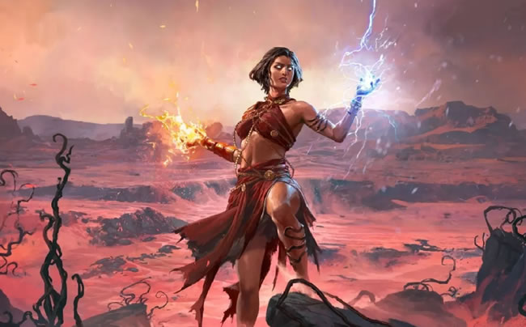

SORCERESS
Master of Elemental and Temporal Magic
The Sorceress in Path of Exile 2 is a master of elemental forces and temporal manipulation. She wields staves to channel devastating spells that control both space and time, alongside traditional elemental magic.
Specializing in lightning storms, time manipulation, and ancient Vaal magic, Sorceresses excel at controlling the battlefield through multiple dimensions. Their playstyle revolves around timing, positioning, and combining temporal effects with elemental damage.
With the ability to slow time, accelerate her own actions, and command devastating storms, the Sorceress can manipulate reality itself to gain advantage in combat.

Sorceress Abilities
Storm Cascade
Lightning Spell
Create a cascading wave of lightning that travels forward, shocking and damaging enemies in its path. The wave grows in size as it travels.
Temporal Shift
Time Manipulation
Create a bubble of altered time where enemies are slowed and your spells have reduced cast time. Lasts for a duration based on charge time.
Vaal Arc
Vaal Lightning Spell
Release a powerful Vaal lightning spell that chains between all enemies in a large area. Consumes Vaal souls to unleash catastrophic damage.
Time Warp
Movement & Buff
Briefly accelerate your own time, increasing movement speed, cast speed, and attack speed for a short duration. Leaves a temporal echo behind.
Sorceress Ascendancy Classes
STORMWEAVER
Mistress of Storms
The Stormweaver commands lightning and storms with unparalleled mastery. Specializes in chaining lightning spells, shocking enemies, and creating persistent storm fields that control the battlefield.
Key Features
- Lightning spells chain to additional targets
- Massively increased lightning damage
- Create persistent storm clouds that deal damage
- Shocked enemies take massively increased damage
- Lightning spells have increased area of effect
CHRONOMANCER
Master of Time
The Chronomancer manipulates time itself, slowing enemies, accelerating allies, and creating temporal anomalies. Specializes in cooldown reduction, action speed, and temporal displacement.
Key Features
- Slow time for enemies in an area
- Reduce cooldowns of all skills
- Increased action speed for yourself and allies
- Create temporal echoes that repeat spells
- Manipulate skill duration and effect timing
DISCIPLE OF VARASHTA
Vaal Magic Specialist
A disciple of ancient Vaal magic, specializing in Vaal skills and soul manipulation. Masters the art of consuming souls to unleash devastating Vaal spells with unique properties.
Key Features
- Enhanced Vaal skill effects and duration
- Faster Vaal soul generation
- Vaal skills have additional effects
- Soul manipulation for buffs and debuffs
- Ancient Vaal knowledge grants unique bonuses